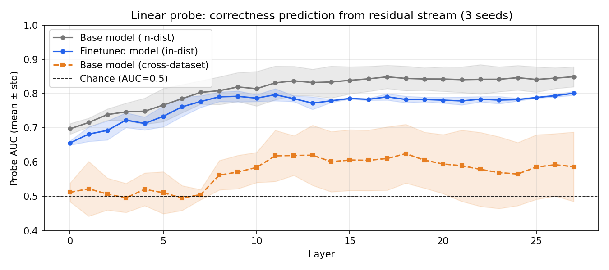

Large language models can be prompted to explicitly express confidence in their answers. However, the expressed confidence may not correlate with correctness of the answers: Ask a 3B model who directed an obscure 1970s film and it might answer with the same assured tone as when you ask it the capital of France. This is miscalibration – a mismatch between expressed and warranted confidence – and it’s a fundamental problem for any system that needs to communicate its own reliability.
The interesting question isn’t just can we fix this but why does it happen in the first place? Two very different accounts are possible:
- Representation failure: the model simply doesn’t know what it doesn’t know – the uncertainty information isn’t in the model at all, and training on confidence labels can’t create it from scratch.
- Expression failure: the model does have the relevant internal signal, but lacks a mechanism to translate it into a confidence output.
These have different implications. If it’s a representation problem, there’s not much we could do apart from training a bigger model with more capacity to store factual knowledge. If it’s an expression problem, targeted training may be enough to calibrate the model to translate uncertainty into the expressed confidence value. This post describes an experiment that tried to find out which one it is.
The Setup
We finetuned Llama3.2-3B-Instruct using GRPO with a reward structure that directly incentivises calibrated confidence. For each question, the model had to produce a JSON array:
["high", "Paris"]where the first element is its confidence ("high" or "low"), and the second is its answer. We then rewarded or penalised based on whether it was right and how confident it claimed to be:
| High confidence | Low confidence | |
|---|---|---|
| Correct | +2 | +1 |
| Incorrect | −2 | −1 |
| Unparseable | −1.5 | — |
High confidence is the rational choice when the model expects to be right more than 50% of the time. An unparseable output gets −1.5 – worse than a low-confidence wrong answer – so the model won’t learn to output arbitrary outputs.
We trained on PopQA, a factual QA dataset built from Wikidata with entity popularity scores that serve as a natural difficulty proxy. One important practical finding: training data difficulty acts as an implicit regulariser. Training on questions the model almost always gets right causes it to collapse to always saying “high confidence”; training on questions it almost never gets right causes it to always say “low confidence”. We found the sweet spot at min_popularity=20,000, where training accuracy sits around 30–40%. Training at min_popularity=50,000 (easier questions) produced a finetuned model with ECE 0.49 – nearly identical to the untrained base model.
We also tested two baselines using the base model without finetuning: direct prompting (same JSON format, no reasoning) and chain-of-thought prompting (CoT; brief reasoning before the answer).
Behavioral Results
Averaged across three random seeds:
PopQA (in-distribution)
| Metric | Base direct | Base CoT | Finetuned |
|---|---|---|---|
| ECE ↓ | 0.525 ± 0.014 | 0.324 ± 0.023 | 0.069 ± 0.007 |
| Accuracy ↑ | 0.165 ± 0.003 | 0.201 ± 0.002 | 0.201 ± 0.005 |
| High-conf accuracy ↑ | 0.194 ± 0.007 | 0.294 ± 0.010 | 0.603 ± 0.013 |
| High-conf rate | 0.735 ± 0.021 | 0.531 ± 0.028 | 0.202 ± 0.007 |
| Calibration gap ↑ | 0.107 ± 0.031 | 0.196 ± 0.006 | 0.503 ± 0.023 |
ECE (expected calibration error) drops 87% from base to finetuned. But the more interpretable number is what happens to high-confidence predictions: the base model says “high confidence” on 73.5% of questions and is right on 19.4% of them. The finetuned model says “high confidence” on just 20.2% of questions — and is right on 60.3% of them. It learned to be selective.
The calibration gap (accuracy on high-conf predictions minus accuracy on low-conf predictions) grows nearly five-fold: 0.107 -> 0.503. This implies the model learns that its confidence label actually means something.
The popularity quartile breakdown is particularly clean — the finetuned model’s high-confidence rate tracks its actual accuracy across difficulty levels:
| Quartile | Accuracy | High-conf rate |
|---|---|---|
| Q1 (hardest) | 12.9% ± 0.5% | 8.6% ± 0.3% |
| Q2 | 8.8% ± 1.8% | 12.2% ± 1.3% |
| Q3 | 15.5% ± 2.4% | 15.2% ± 1.3% |
| Q4 (easiest) | 43.2% ± 2.3% | 44.5% ± 3.1% |
The base model maintains 58–78% high-confidence rates regardless of difficulty.
Does it generalise?
We tested on TriviaQA without any further training:
| Metric | Base direct | Base CoT | Finetuned |
|---|---|---|---|
| ECE ↓ | 0.322 ± 0.003 | 0.293 ± 0.024 | 0.290 ± 0.010 |
| Accuracy ↑ | 0.511 ± 0.005 | 0.538 ± 0.019 | 0.532 ± 0.020 |
| High-conf accuracy ↑ | 0.550 ± 0.004 | 0.591 ± 0.027 | 0.602 ± 0.018 |
| High-conf rate | 0.892 ± 0.012 | 0.798 ± 0.004 | 0.700 ± 0.022 |
| Calibration gap ↑ | 0.366 ± 0.043 | 0.262 ± 0.042 | 0.232 ± 0.026 |
The ECE improvement is modest (0.322 -> 0.290) compared to PopQA, and calibration gap decreases (0.366 -> 0.232). Furthermore, CoT achieves comparable calibration to the finetuned model (ECE 0.293 vs 0.290). This indicates that the finetuned model’s calibration behavior does not strongly generalise beyond its training distribution. PopQA’s entity-centric format and popularity-correlated difficulty may allow the model to learn confidence signals tied to detectable surface features (such as entity name familiarity) that do not transfer to TriviaQA’s more varied question distribution, where correctness is harder to predict from any single input feature.
Accuracy as a side effect
A somewhat surprising finding: calibration training also improved factual accuracy on PopQA by +3.5% ± 0.8%, statistically significant in all three seeds (McNemar’s test, p < 0.005). The effect is concentrated in higher-popularity questions (+7.1% in Q4 vs +1.9% in Q1) and is absent on TriviaQA (McNemar’s test, p=286). This is consistent with RL training improving factual recall as a side effect – a pattern also observed in DeepSeek-R1 for reasoning tasks.
What’s Happening Inside?
We trained linear probes on the residual stream activations at the position of the final prompt token – the point right before the model starts generating – for all 28 layers of both the base and finetuned models. This approach is similar to that presented in Azaria & Mitchell, 2023, where they trained classifiers to predict the correctness of a statement based on hidden layer activations.
The question: does the internal representation predict whether the model will get the answer right, and does this change after finetuning?

The base model already knows. Probe AUC rises from 0.70 at layer 0 to a broad plateau of ~0.85–0.86 from layer 11 onwards. Before any calibration training, the model’s internal representations are already strongly predictive of whether it will answer correctly. The uncertainty information is there – the model just doesn’t express it.
Finetuning reduces linear probe AUC. The finetuned model shows consistently lower probe AUC, especially across later layers, a gap of about 0.05 relative to the base model. This is the surprising result: dramatically better behavioral calibration (ECE 0.069 vs 0.525) is accompanied by less linearly separable internal representations. The correctness-predictive information becomes harder to decode with a linear probe, yet the model’s outputs become much better calibrated.
This suggests calibration training reorganises how uncertainty information is encoded and used, rather than simply amplifying an existing signal. The finetuning changes the representational geometry in a way that’s less decodable by a logistic probe but more functionally coupled to the confidence output. Why? A few possibilities:
- The uncertainty signal gets encoded in a more nonlinear or distributed form after finetuning, harder for a linear probe to capture but accessible to the model’s own attention and feedforward mechanisms.
- GRPO training partially “uses up” the correctness-predictive signal by routing it through the confidence output, leaving a weaker residual in the activations.
- The probe captures both genuine uncertainty information and question-difficulty surface features; finetuning on filtered training data (
min_popularity ≥ 20,000) selectively reduces the surface-feature component.
Distinguishing between these would require causal intervention experiments, e.g., activation patching to test whether specific layer activations causally influence the confidence output. Perhap’s we’ll get to that at some point.
Does the representation generalise across datasets?
We trained probes on PopQA activations and evaluated on TriviaQA activations (with the test set downsampled to match the 15% PopQA positive rate). Cross-dataset AUC peaks (>0.6) in mid-layers (11–19), with near-chance performance in the first 7 layers. The early-layer signal doesn’t transfer – it’s capturing PopQA-specific question features. The mid-layer signal generalises, consistent with those layers encoding more abstract semantic content.
What This Means
The central finding is that miscalibration in this 3B model is, to a large extent, a failure of expression, not representation. The model knows what it doesn’t know – the information is in the residual stream – but without targeted training it can’t translate that signal into its outputs.
GRPO with calibration rewards installs this translation mechanism. But it does so by reorganising internal representations rather than amplifying them, which raises new questions about the nature of learned confidence.
A few practical takeaways:
- Training data difficulty is a critical hyperparameter for calibration training. Questions that are too easy lead to confidence values that are always high. Questions that are too hard lead to confidence values that are always low. The reward function alone doesn’t determine the dynamics; the difficulty distribution of training data interacts with it.
- CoT prompting is a reasonable calibration intervention when models have meaningful domain knowledge (~40–60% accuracy). For harder tasks at the edges of model knowledge, finetuning is needed.
- The base model’s residual stream already contains correctness-predictive information that could in principle be extracted with a linear probe, without any finetuning. This enables deployment-time confidence estimation that doesn’t require any model modification.
Limitations and Future Work
- All experiments use a single 3B model, so scale generalisation is unknown.
- The binary confidence format is a significant simplification – three or more bins would require non-trivial reward design to prevent the model from using intermediate bins as a hedge.
- The probe AUC decrease interpretation is correlational; causal intervention experiments would provide stronger evidence.
The most interesting open question is the mechanism behind the probe AUC decrease. Activation patching experiments could establish whether specific layers causally drive the confidence output, and nonlinear probes could test whether the uncertainty information is present but nonlinearly encoded after finetuning. If either finds a clean answer, it would meaningfully advance our understanding of how calibration training works mechanistically.
Code is available at github.com/aikkala/llm-calibration. Questions and feedback welcome.